Big Oak Golf Course
Big Oak Golf Course
Big Oak Golf Course
Big Oak Golf Course
Big Oak Golf Course

Big Oak Golf Course has the perfect facility to enjoy a great day on
the links. Our scenic 18 hole course is located in the heart of the
Finger Lakes with a layout that offers something for golfers of all
skill levels.